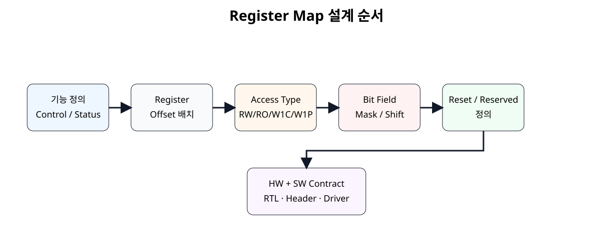
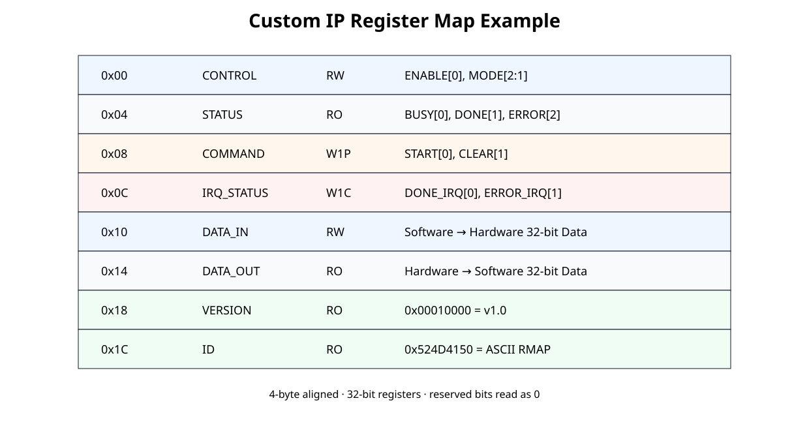
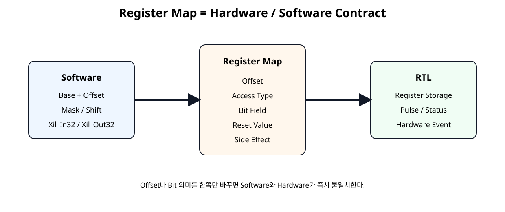

주소
32-bit Register를 4-byte Offset으로 배치한다.
Basys3 SoC + NPU · SoC 11
Custom AXI IP를 만들기 전에 Software와 RTL이 공유할 Register 계약을 먼저 설계한다. 주소 Offset, Access Type, Bit Field, Reset Value, Reserved Bit, W1C/W1P 동작을 확정하고 C Header와 Bus-independent Register Bank RTL을 같은 정의로 맞춘다.
32-bit Register를 4-byte Offset으로 배치한다.
각 Bit의 권한과 Side Effect를 명확히 정의한다.
Register Bank는 AXI Protocol과 분리하여 독립 Module로 만든다.
Custom IP에서 Software가 Hardware 기능을 제어하려면 CPU가 읽고 쓸 수 있는 주소와 각 Bit의 의미가 필요하다. Register Map은 이 관계를 하나의 계약으로 만든다.
SoC 10까지는 AMD가 Register Map을 이미 정의한 GPIO, UART, Timer, INTC를 사용했다. 앞으로는 사용자가 직접 Register를 정의한다.


32-bit Register는 0x00, 0x04, 0x08, 0x0C...처럼 4 Byte 간격으로 배치한다.
AMD AXI GPIO도 32-bit Register를 0x00, 0x04, 0x08, 0x0C Offset으로 배치한다.
| 표기 | 의미 | 예제 |
|---|---|---|
| RW | Software Read / Write | CONTROL, DATA_IN |
| RO | Software Read Only | STATUS, DATA_OUT, VERSION |
| WO | Software Write Only | Command 계열 |
| W1C | 1을 쓰면 해당 상태 Clear | IRQ_STATUS |
| W1P | 1을 쓰면 1 Clock Pulse 생성 | COMMAND |
CONTROL처럼 Software 설정값을 Hardware가 계속 유지해야 하는 Register에 사용한다.
STATUS는 Hardware 상태를 Software가 읽기만 한다. Software Write는 무시한다.
COMMAND.START에 1을 쓰면 Register에 1이 계속 저장되는 것이 아니라 start_pulse_o가 1 Clock 동안만 High가 된다.
Start, Clear, Trigger처럼 Event를 전달하는 Command에 적합하다.
IRQ_STATUS는 Hardware Event가 발생하면 1로 Set되고 Software가 해당 Bit에 1을 쓰면 Clear된다.
AMD AXI Timer의 T0INT도 동일하게 1을 써야 Clear된다.
사용하지 않는 Bit는 Reserved로 정의하고 Read 시 0을 반환하도록 한다. Software는 Reserved Bit에 의미 있는 값을 의존하지 않는다.
모든 저장 Register는 Reset 직후 값을 문서에 명시한다.
| Register | Reset |
|---|---|
| CONTROL | 0x00000000 |
| IRQ_STATUS | 0x00000000 |
| DATA_IN | 0x00000000 |
| VERSION | 0x00010000 |
| ID | 0x524D4150 |
CONTROL.MODE[2:1]처럼 여러 Bit를 하나의 Field로 사용할 때 Software에는 Mask와 Shift를 함께 정의한다.
#define CUSTOM_CONTROL_MODE_MASK 0x00000006U
#define CUSTOM_CONTROL_MODE_SHIFT 1U| Bit | Name | Access | Reset |
|---|---|---|---|
| 0 | ENABLE | RW | 0 |
| 2:1 | MODE | RW | 0 |
| 31:3 | Reserved | - | 0 |
| Bit | Name | Access |
|---|---|---|
| 0 | BUSY | RO |
| 1 | DONE | RO |
| 2 | ERROR | RO |
상태 Register를 Control 저장 Register와 분리하면 Hardware Source와 Software Write 경계가 명확해진다.
| Bit | Name | Access | 동작 |
|---|---|---|---|
| 0 | START | W1P | 1 Clock start pulse |
| 1 | CLEAR | W1P | 1 Clock clear pulse |
Hardware Event Set과 Software W1C가 같은 Clock에 발생하면 이번 예제는 Hardware Set 우선으로 정의한다. 새 Event가 Clear Write와 동시에 들어와도 Event를 잃지 않기 위한 정책이다.
| Register | 방향 | Access |
|---|---|---|
| DATA_IN | Software → Hardware | RW |
| DATA_OUT | Hardware → Software | RO |
VERSION과 ID Register를 두면 Software가 연결된 IP 종류와 Revision을 확인할 수 있다.
Register Bank는 AXI Slave와 독립적으로 wr_strb[3:0]를 입력받도록 한다. DATA_IN은 각 Byte Strobe가 1인 Byte만 갱신한다.
CONTROL처럼 순수 RW Register는 Read → Mask 변경 → Write가 자연스럽다. 반면 W1C 상태 Bit를 같은 Register에 섞으면 Read 값의 1을 다시 Write하면서 의도하지 않은 Clear가 발생할 수 있다.

AMD Driver가 사용하는 것처럼 BaseAddress + RegOffset 형태로 32-bit Register를 접근한다.
#ifndef CUSTOM_REGMAP_H
#define CUSTOM_REGMAP_H
#include "xil_io.h"
#include "xil_types.h"
/*
* SoC 11 - Custom Register Map example
*
* Base address is assigned by Vivado Address Editor.
* This file defines only offsets, fields and access helpers.
*/
/* Register offsets */
#define CUSTOM_CONTROL_OFFSET 0x00U
#define CUSTOM_STATUS_OFFSET 0x04U
#define CUSTOM_COMMAND_OFFSET 0x08U
#define CUSTOM_IRQ_STATUS_OFFSET 0x0CU
#define CUSTOM_DATA_IN_OFFSET 0x10U
#define CUSTOM_DATA_OUT_OFFSET 0x14U
#define CUSTOM_VERSION_OFFSET 0x18U
#define CUSTOM_ID_OFFSET 0x1CU
/* CONTROL register fields: RW */
#define CUSTOM_CONTROL_ENABLE_MASK 0x00000001U
#define CUSTOM_CONTROL_MODE_MASK 0x00000006U
#define CUSTOM_CONTROL_MODE_SHIFT 1U
/* STATUS register fields: RO */
#define CUSTOM_STATUS_BUSY_MASK 0x00000001U
#define CUSTOM_STATUS_DONE_MASK 0x00000002U
#define CUSTOM_STATUS_ERROR_MASK 0x00000004U
/* COMMAND register fields: W1P */
#define CUSTOM_COMMAND_START_MASK 0x00000001U
#define CUSTOM_COMMAND_CLEAR_MASK 0x00000002U
/* IRQ_STATUS register fields: W1C */
#define CUSTOM_IRQ_DONE_MASK 0x00000001U
#define CUSTOM_IRQ_ERROR_MASK 0x00000002U
/* Fixed read-only values */
#define CUSTOM_VERSION_VALUE 0x00010000U /* v1.0 */
#define CUSTOM_ID_VALUE 0x524D4150U /* ASCII "RMAP" */
#define Custom_ReadReg(BaseAddress, RegOffset) \
Xil_In32((BaseAddress) + (RegOffset))
#define Custom_WriteReg(BaseAddress, RegOffset, Data) \
Xil_Out32((BaseAddress) + (RegOffset), (Data))
static inline void Custom_SetEnable(UINTPTR BaseAddress, u32 Enable)
{
u32 value;
value = Custom_ReadReg(BaseAddress, CUSTOM_CONTROL_OFFSET);
if (Enable != 0U) {
value |= CUSTOM_CONTROL_ENABLE_MASK;
} else {
value &= ~CUSTOM_CONTROL_ENABLE_MASK;
}
Custom_WriteReg(BaseAddress, CUSTOM_CONTROL_OFFSET, value);
}
static inline void Custom_SetMode(UINTPTR BaseAddress, u32 Mode)
{
u32 value;
value = Custom_ReadReg(BaseAddress, CUSTOM_CONTROL_OFFSET);
value &= ~CUSTOM_CONTROL_MODE_MASK;
value |= (Mode << CUSTOM_CONTROL_MODE_SHIFT) & CUSTOM_CONTROL_MODE_MASK;
Custom_WriteReg(BaseAddress, CUSTOM_CONTROL_OFFSET, value);
}
static inline void Custom_Start(UINTPTR BaseAddress)
{
/* W1P: write 1 to generate one-cycle start pulse */
Custom_WriteReg(
BaseAddress,
CUSTOM_COMMAND_OFFSET,
CUSTOM_COMMAND_START_MASK
);
}
static inline void Custom_ClearDoneIrq(UINTPTR BaseAddress)
{
/* W1C: writing 1 clears only DONE IRQ */
Custom_WriteReg(
BaseAddress,
CUSTOM_IRQ_STATUS_OFFSET,
CUSTOM_IRQ_DONE_MASK
);
}
#endif
AXI 신호를 직접 넣지 않고 wr_en / wr_offset / wr_data / wr_strb / rd_offset / rd_data의 Bus-independent Interface로 작성한다.
module custom_register_bank (
input wire clk,
input wire resetn,
// Bus-independent register access interface.
// SoC 12 will connect this interface to AXI4-Lite.
input wire wr_en,
input wire [7:0] wr_offset,
input wire [31:0] wr_data,
input wire [3:0] wr_strb,
input wire [7:0] rd_offset,
output reg [31:0] rd_data,
// Hardware status / event inputs
input wire busy_i,
input wire done_i,
input wire error_i,
input wire irq_done_event_i,
input wire irq_error_event_i,
input wire [31:0] data_out_i,
// Control outputs
output reg enable_o,
output reg [1:0] mode_o,
output reg start_pulse_o,
output reg clear_pulse_o,
output reg [31:0] data_in_o,
output reg [1:0] irq_status_o
);
localparam [7:0] REG_CONTROL = 8'h00;
localparam [7:0] REG_STATUS = 8'h04;
localparam [7:0] REG_COMMAND = 8'h08;
localparam [7:0] REG_IRQ_STATUS = 8'h0C;
localparam [7:0] REG_DATA_IN = 8'h10;
localparam [7:0] REG_DATA_OUT = 8'h14;
localparam [7:0] REG_VERSION = 8'h18;
localparam [7:0] REG_ID = 8'h1C;
localparam [31:0] VERSION_VALUE = 32'h0001_0000;
localparam [31:0] ID_VALUE = 32'h524D_4150; // ASCII "RMAP"
integer byte_index;
always @(posedge clk) begin
if (!resetn) begin
enable_o <= 1'b0;
mode_o <= 2'b00;
start_pulse_o <= 1'b0;
clear_pulse_o <= 1'b0;
data_in_o <= 32'h0000_0000;
irq_status_o <= 2'b00;
end else begin
// W1P pulses are one clock wide by default.
start_pulse_o <= 1'b0;
clear_pulse_o <= 1'b0;
// Hardware events set IRQ status.
// Event set has priority over software clear in the same cycle.
if (irq_done_event_i) begin
irq_status_o[0] <= 1'b1;
end else if (
wr_en &&
(wr_offset == REG_IRQ_STATUS) &&
wr_strb[0] &&
wr_data[0]
) begin
irq_status_o[0] <= 1'b0;
end
if (irq_error_event_i) begin
irq_status_o[1] <= 1'b1;
end else if (
wr_en &&
(wr_offset == REG_IRQ_STATUS) &&
wr_strb[0] &&
wr_data[1]
) begin
irq_status_o[1] <= 1'b0;
end
if (wr_en) begin
case (wr_offset)
REG_CONTROL: begin
if (wr_strb[0]) begin
enable_o <= wr_data[0];
mode_o <= wr_data[2:1];
end
end
REG_COMMAND: begin
if (wr_strb[0]) begin
start_pulse_o <= wr_data[0];
clear_pulse_o <= wr_data[1];
end
end
REG_DATA_IN: begin
// Byte-enable write using WSTRB-equivalent strobes.
for (byte_index = 0; byte_index < 4; byte_index = byte_index + 1) begin
if (wr_strb[byte_index]) begin
data_in_o[byte_index*8 +: 8] <=
wr_data[byte_index*8 +: 8];
end
end
end
default: begin
// RO / reserved / unmapped writes have no effect.
end
endcase
end
end
end
always @(*) begin
case (rd_offset)
REG_CONTROL: begin
rd_data = {29'h0, mode_o, enable_o};
end
REG_STATUS: begin
rd_data = {29'h0, error_i, done_i, busy_i};
end
REG_COMMAND: begin
// W1P command register has no retained state.
rd_data = 32'h0000_0000;
end
REG_IRQ_STATUS: begin
rd_data = {30'h0, irq_status_o};
end
REG_DATA_IN: begin
rd_data = data_in_o;
end
REG_DATA_OUT: begin
rd_data = data_out_i;
end
REG_VERSION: begin
rd_data = VERSION_VALUE;
end
REG_ID: begin
rd_data = ID_VALUE;
end
default: begin
rd_data = 32'h0000_0000;
end
endcase
end
endmodule
Register 기능을 AXI Protocol Logic과 분리하면 Register Bank를 다른 Bus나 Testbench에서도 재사용할 수 있다.
| 항목 | 확인 |
|---|---|
| Reset | CONTROL/IRQ_STATUS/DATA_IN 초기값 |
| RW | CONTROL Write 후 Readback |
| RO | STATUS/DATA_OUT Write 무시 |
| W1P | START/CLEAR가 1 Clock만 High |
| W1C | 1인 Bit만 Clear |
| WSTRB | 선택된 Byte만 변경 |
| Reserved | Read 0 / Write 무시 |
| VERSION/ID | 상수 Readback |
Motor, PWM, UART Controller, NPU 등으로 확장할 때도 기본 패턴을 유지한다.
새 Register를 추가할 때 기존 Offset 의미를 바꾸지 않고 뒤쪽에 확장하는 것이 Software 호환성에 유리하다.
| 문제 | 원인 |
|---|---|
| C Header와 RTL Offset 불일치 | Software가 다른 Register 접근 |
| RW와 W1C 혼합 | Read-Modify-Write Side Effect |
| Reserved Bit 값을 그대로 반환 | Revision 간 Software 호환성 저하 |
| W1P를 저장 Register로 구현 | Start 신호가 계속 High |
| W1C Event와 Clear 우선순위 미정 | 동시 Event 누락 가능 |
| WSTRB 무시 | Byte Write 동작 불일치 가능 |
| 문서 | 확인 항목 |
|---|---|
| AMD PG144 · AXI GPIO · 2026-01-30 | Base-relative Offset, 32-bit Register 배치, Access Type |
| AMD PG079 · TCSR0 · 2025-08-15 | RW Bit와 Write-1-to-Clear T0INT 실제 사례 |
| AMD embeddedsw · xil_io.h | Xil_In32, Xil_Out32 32-bit MMIO 접근 |
| AMD embeddedsw Driver Register Access Pattern | ReadReg/WriteReg = BaseAddress + RegOffset 패턴 |